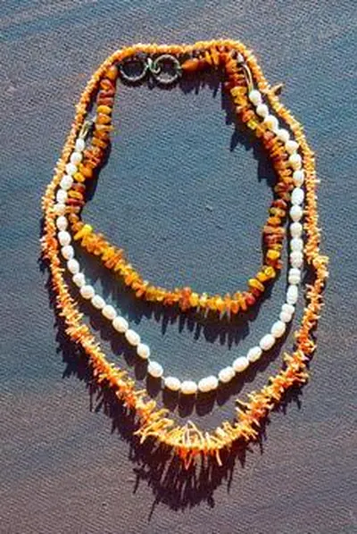

珍珠仿品與優化：玻璃珠與染色珠
假珍珠的破綻藏在細節裡——塑膠太滑、玻璃太涼、染色太假，學會三招，一眼看穿。

核心定義
珍珠仿品：玻璃珠（上漆/魚鱗粉）、塑膠珠、貝殼珠（貝殼磨成再包珍珠質）、蠟珠等——它們「看起來像珍珠」，但本質不是貝類的珍珠質。優化則指對真珍珠的改色：染色、輻照。
辨識三步：看光澤（仿品啞或塑料感）、摸表面（真珠微涼帶砂、塑膠滑、玻璃涼）、牙齒輕刮（真珠砂感、玻璃光滑）——三步快篩，擋掉九成仿品。
特徵與分類
| 仿品/優化 | 本質 | 破綻 |
|---|---|---|
| 玻璃珠 | 上漆玻璃 | 太重、太滑、脫漆 |
| 塑膠珠 | 塑膠 | 太輕、溫熱、無砂感 |
| 貝殼珠 | 貝殼磨製 | 無珍珠質層次 |
| 染色珠 | 真珠染色 | 顏色呆板、孔口滲色 |
| 輻照珠 | 真珠輻照 | 灰藍色調、需證書 |
染色珍珠的破綻：顏色呆板不自然、深淺不均、鑽孔處見染料滲透——「黑珍珠」與「金珠」是染色的重災區（天然黑珠極少）。輻照改色則產生灰色調，需實驗室光譜確認。
科學原理
牙齒刮試的科學：真珍珠的文石層有微觀凹凸——刮起來「砂砂的」；玻璃/塑膠光滑——「滑滑的」。這個簡單動作，利用了珍珠的微觀結構。手感的科學：珍珠比熱容大、微涼，塑膠溫熱——材質的熱傳導差異。
染色檢測：放大鏡看鑽孔（染料滲色）、看顏色分布（天然色澤漸層自然、染色呆板）；實驗室用光譜與螢光確認染料。輻照改色產生特殊灰藍調與光譜特徵——需專業檢測。
鑑定與鑑別方法
- 牙齒刮試：砂感（真）vs 光滑（假）
- 看光澤：鏡面反射 vs 塑料啞光
- 放大鏡：表面生長紋 vs 漆層
- 看孔口：染料滲色 vs 天然漸層
- 證書：標明海水/淡水、處理
市場行情與保養建議
市場現況：玻璃/塑膠仿珍珠最常見於旅遊區與廉價飾品——一串「南洋珠」賣幾百元，成本可能是幾元。染色珍珠則混在真珠市場裡，以「大溪地黑珠」「金珠」之名高價出售。
自保要點：認證書（處理狀態）、看價格（異常便宜即警覺）、學三步快篩（刮、看、摸）。珍珠的市場，誠實的商家會標明養殖與處理。
常見誤區
燒會直接毀掉珍珠（有機質燒焦）——這是破壞性測試，不建議。牙齒刮試與放大鏡，才是安全的辨識方式。
天然大溪地黑珠真實存在（黑蝶貝基因）——但產量少、價格高。染色黑珠「便宜又常見」——看到異常便宜的「黑珠」，先懷疑染色。
冷知識
把魚鱗提取物塗在玻璃珠上做出珍珠光澤——這個「魚鱗珍珠」工藝，從古羅馬一直用到近代。
高級貝殼珠（貝殼磨珠再包珍珠質）成分接近真珠——但沒有「貝類層層包裹」的生長結構，實驗室一眼認出。
反直覺觀點
貝殼珠表面「太完美均勻」——真珍珠的光澤有生命感的不均勻，仿品反而機械呆板。過度完美，是仿品的通病。
天然珍珠的色澤溫潤有漸層；染色珠濃豔呆板——「太漂亮的顏色」，往往是染料的作品。